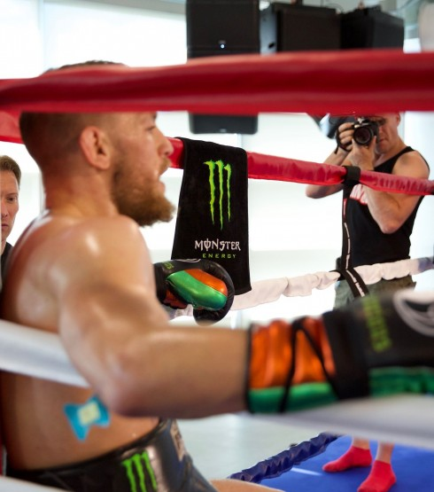
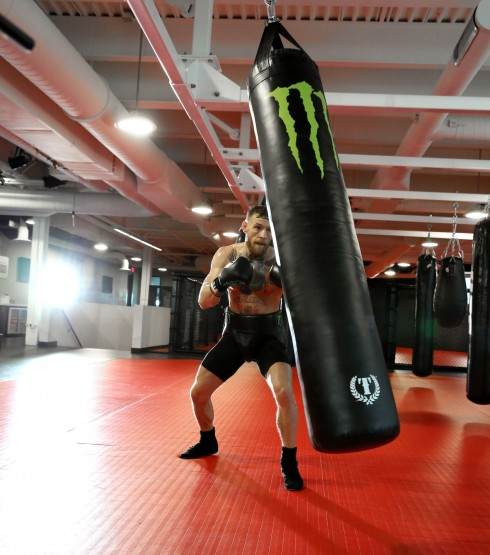

O anúncio foi feito semana antes da ''Luta do Século''– Mayweather vs. McGregor – aonde McGregor irá fazer o que nenhum outro ser humano fez - derrotar Floyd Mayweather. A luta acontecerá no dia 26 de Agosto na T-Mobile Arena em Las Vegas.
 
"Depois de dois anos como um lutador do UFC da Monster Energy, estamos entusiasmados em continuar nossa parceria com Conor McGregor enquanto ele se prepara para a maior luta da história", disse Marianne Radley, VP Sênior de Marketing da Monster Energy. "Sua confiança, ousadia, determinação e agressividade são sinônimos de nossos valores de marca e estamos orgulhosos de ele representar nossa empresa".
Em prol da parceria com McGregor, a Monster Energy lançou um comercial de 30 segundos que pode ser visto pelos fãs no site da Monster Energy, em várias plataformas digitais e em programas de televisão selecionados.
O movimento simboliza o compromisso contínuo da Monster Energy com o MMA e o apoio contínuo dos melhores atletas do mundo, dos quais McGregor, inegavelmente, fica no topo dessa lista.